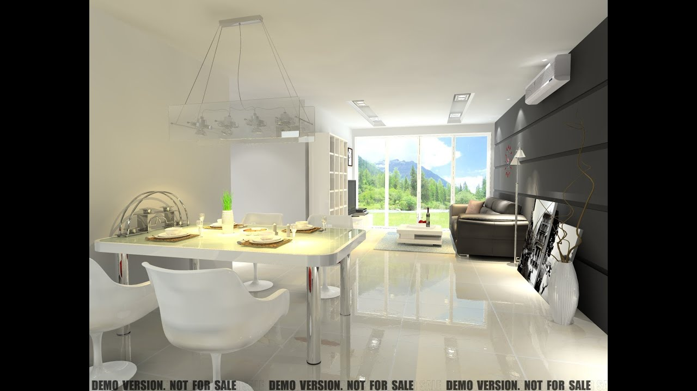

90
Usi de interior - MatHaus by Arabesque

Produsele MatHaus Produsele MatHaus Constructii Constructii Armaturi si fundatii Armaturi si fundatii Otel beton si accesorii Otel beton Otel beton PC52 Otel beton B500 Otel beton OB37 Accessorii otel beton Etrieri otel beton Membrana fundatie Sarma, tabla, plase sudate si imprejmuiri metalice Produse metalurgice Tabla lisa, cutata si accesorii Tabla lisa, cutata si accesorii Tabla lisa Tabla cutata Plasa sudata si panou sudat Plasa sudata si panou sudat Plasa sudata Panou sudat Garduri metalice: panouri gard si imprejmuiri Garduri metalice: panouri de gard si imprejmuiri Panouri gard Plasa gard Stalpi gard si accesorii de prindere Sipca metalica Porti si accesorii Feronerie pentru garduri si porti Sarma Tevi si profile pentru constructii Tevi si profile pentru constructii Teava rectangulara - teava patrata, dreptunghiulara si teava rotunda Tevi si profile LBC Teava patrata Teava dreptunghiulara Teava rotunda de otel Profile laminate din otel Profile laminate Cornier Otel lat Otel patrat Profil UNP Zidarie, pavele si borduri Zidarie, pavele si borduri Caramizi Caramizi Caramida cu goluri Caramida plina Elemente de ventilatie Buiandrugi BCA Boltari de fundatie Pavele si borduri de beton Pavele si borduri de beton Pavaje Borduri Piatra decorativa Placare piatra Piatra naturala Piatra decorativa de interior Piatra decorativa de exterior/interior Piatra pentru soclu Materiale de constructii Materiale de constructii Ciment gri si lianti Mortare pentru zidarie si tencuieli Mortare zidarie si tencuieli Mortare pentru zidarie Mortare pentru tencuieli Grunduri pentru mortare de tencuit Mortare speciale Tinciuri Sape de egalizare, sape autonivelante si pardoseli industriale Sape Sape de egalizare Sape autonivelante Pardoseli industriale Grunduri pentru sape Gleturi Gleturi Gleturi de umplere Gleturi de finisaj Var hidratat si ciment alb Ipsos Ipsos Ipsos pentru constructii si modelaj Ipsos de imbinare si adezivi pentru placi Adezivi Adezivi Adezivi pentru placari ceramice si piatra Adezivi pentru polistiren si vata Accesorii tencuieli Panouri sandwich Produse din lemn pentru constructii Produse din lemn pentru constructii OSB Materiale pentru cofraje Materiale pentru cofraje TEGO Placa galbena Grinzi pentru cofraje Popi metalici Decofrol si accesorii pentru cofraje Suruburi, cuie, dibluri si alte elemente de fixare Suruburi, cuie, dibluri si alte elemente de fixare Echipament de protectie Echipament de protectie Termoizolatii Termoizolatii Polistiren Polistiren Polistiren expandat Polistiren extrudat Vata minerala pentru termoizolatii Vata minerala Vata de sticla Vata bazaltica Placi minerale pentru termoizolatii Accesorii de termosistem Accesorii de termosistem Dibluri polistiren Dibluri vata minerala Profile pentru termoizolatii Tesatura fibra sticla Adezivi pentru polistiren si vata Izolatii si mansoane pentru tevi Profile decorative pentru fatada Produse pentru hidroizolatii si etansari Produse pentru hidroizolatii si etansari Hidroizolatii lichide Mortar hidroizolant Amorse pentru hidroizolatii Etansanti si accesorii Utilaje si echipamente Utilaje si echipamente Roabe si betoniere Roabe si betoniere Roabe si accesorii Betoniere Scari si schele Acoperisuri si hidroizolatii Acoperisuri si hidroizolatii Tigla metalica si accesorii Tigla metalica si accesorii Tigla metalica Accesorii tigle metalice Accesorii tigle metalice Suruburi pentru acoperis Elemente de inchidere Tigla ceramica, tigla de beton si elemente de montaj Tigla ceramica, tigla de beton si elemente de montaj Tigla ceramica si accesorii Tigla beton si accesorii Elemente de montaj - tigla ceramica si beton Tabla lisa, cutata si accesorii Tabla lisa, cutata si accesorii Tabla lisa Tabla cutata Jgheaburi si burlane Jgheaburi si burlane Sistem jgheab-burlan din metal Sistem jgheab-burlan din PVC Membrane bituminoase si carton bituminat Membrane bituminoase si carton bituminat Membrane bituminoase Accesorii membrane bituminoase Carton bitumat si adezivi Produse pentru hidroizolatii si etansari Produse pentru hidroizolatii si etansari Hidroizolatii lichide Mortar hidroizolant Amorse pentru hidroizolatii Etansanti si accesorii Sindrila bituminoasa si placi ondulate Sindrila bituminoasa si placi ondulate Sindrila bituminoasa si accesorii Placi ondulate si accesorii Policarbonat si rulouri fibra de sticla Policarbonat si rulouri fibra de sticla Policarbonat si accesorii Rulouri fibra de sticla Structura acoperis Structura acoperis OSB Folie sub acoperis Grund lemn si protectie la foc Conectori pentru lemn Vata minerala pentru termoizolatii Vata minerala Vata bazaltica Vata de sticla Ferestre si scari mansarda Ferestre si scari mansarda Ferestre mansarda si accesorii Scari mansarda Finisaje si amenajari interioare Finisaje si amenajari interioare Gips carton , tavane casetate si profile Gips carton Placi gips carton Placi gips carton Placi gips carton standard Placi tehnice Profile gips-carton Ipsos de imbinare si adezivi pentru placi Tavan casetat si profile Accesorii gips carton si tavan casetat Accesorii gips carton si tavan casetat Suruburi gips carton Dibluri pentru gips carton Benzi gips carton Piese si accesorii metalice gips carton Accesorii tencuieli Parchet Parchet Parchet laminat Parchet triplustratificat Accesorii parchet Accesorii parchet Elemente de izolare Plinte si accesorii plinte Profile de trecere Adezivi si chituri pentru parchet/lemn Pardoseala LVT - vinil Lambriuri si accesorii Usi si ferestre Usi, ferestre si scari pentru interior Usi de interior Usi de interior Usi de interior celulare Usi de interior din lemn si MDF Tocuri si pervaze Usi de intrare apartament Usi de intrare exterioara Usi PVC cu geam termopan Usi pliante Feronerie usi si ferestre Feronerie usi Amortizoare pentru usi Balamale pentru usi Broaste pentru usi Cilindri pentru usi si ferestre Opritori pentru usi Manere si silduri pentru usi si ferestre Vizoare pentru usi Iale si zavoare pentru usi Feronerie pentru placi laminate HPL Ferestre PVC cu geam termopan Glafuri si plase anti-insecte Glafuri Glafuri aluminiu si accesorii Glafuri PVC si accesorii Plase anti-insecte si accesorii Praguri si benzi de etansare usi si ferestre Vopsea si tencuieli decorative Vopsea Vopsele lavabile Vopsele lavabile Vopsele de interior Vopsele de exterior Vopsele anti-mucegai de baie-bucatarie Coloranti Vopsele efecte decorative Tencuiala decorativa Tencuiala decorativa Tencuieli decorative minerale Tencuieli decorative acrilice Tencuieli decorative siliconice Tencuieli decorative mozaicate Vopsea lemn metal, grunduri si diluanti Vopsele alchidice si epoxidice Vopsea lemn metal - emailuri Grunduri Diluanti si decapanti Lacuri, baituri, pregatire si tratamente lemn Lacuri, baituri, pregatire si tratamente lemn Lacuri pentru lemn Lacuri pentru parchet Lacuri pentru piatra Baituri si lazuri Grund lemn si protectie la foc Amorse Amorse Amorse pentru vopsea lavabila de interior Amorse pentru vopsea lavabila de exterior si tencuieli decorative Vopsele speciale si spray vopsea Vopsele speciale si spray vopsea Vopsele speciale - pentru beton, ceramica, acoperis Spray vopsea Unelte si accesorii pentru zidarie si zugravit Unelte si accesorii pentru zidarie si zugravit Mistrii, canciocuri si spacluri Gletiere si driste Mixere vopsea Galeti si cuve Pensule si bidinele Trafaleti, role si accesorii Seturi pentru vopsit si zugravit Benzi de mascare si folie de protectie Unelte pentru gresie si faianta Silicoane, spume si adezivi de montaj Silicoane, spume si adezivi de montaj Benzi adezive Benzi adezive Benzi ambalare Benzi fixare si reparatie Benzi de mascare si folie de protectie Curatenie si menaj Curatenie si menaj Solutii pentru curatenie si detergenti Articole pentru curatenie Articole pentru curatenie Maturi, perii si farase Mopuri Cosuri de gunoi Galeti si ligheane Bureti si lavete Saci Servetele antibacteriene Manusi si alte produse pentru curatenie Mese de calcat si huse Dezumidificatoare Combatere insecte Decoratiuni Decoratiuni Parchet Parchet Parchet laminat Parchet triplustratificat Accesorii parchet Accesorii parchet Elemente de izolare Plinte si accesorii plinte Profile de trecere Adezivi si chituri pentru parchet/lemn Pardoseala LVT - vinil Covoare Covoare, stergatoare Covoare de casa Covorase de intrare Mochete si traverse Mochete Mochete Traverse Adezivi pentru mocheta, linoleum, PVC Profile de trecere Plinte si accesorii pentru mocheta Linoleum - covor PVC Tapet si autocolant Tapet si autocolant Tapet Fototapet Autocolant Adezivi de montaj - profile decorative, polistiren, tapet Jaluzele, rolete Perdele si draperii Perdele si draperii Perdele Draperii Accesorii perdele si draperii Galerii perdele, sine Galerii perdele, sine Galerii de lemn si accesorii Galerii de metal si accesorii Sine perdele si accesorii Elemente decorative din polistiren Elemente decorative din polistiren Placi decorative polistiren Profile decorative polistiren Rozete de polistiren Adezivi de montaj - profile decorative, polistiren, tapet Pilote, perne, lenjerii de pat Pilote, perne, lenjerii de pat Organizare, ambalare si mutare Organizare, ambalare si mutare Cutii organizare si alimentare Cutii carton, folie bule, folie stretch Ambalare cadouri Electrice Electrice Instalatie electrica Instalatie electrica Cabluri electrice si conductori Cabluri si conductori Cabluri electrice Accesorii cabluri electrice Cabluri audio, video, date, telefon si semnalizare Tablouri electrice, disjunctoare si sigurante Tablouri electrice, disjunctoare si sigurante Tablouri electrice Presetupe si alte accesorii pentru tablouri electrice Disjunctoare si sigurante Teleruptoare si temporizatoare Trasee pentru ghidarea cablurilor Trasee pentru ghidarea cablurilor Canal cablu PVC Tub rigid si accesorii Jgheaburi metalice pentru cabluri si accesorii Copex si tub riflat Doze Automatizari: relee, contactori, butoane Impamantare si paratrasnet Impamantare si paratrasnet Impamantare Paratrasnet Prize, intrerupatoare si variatoare Prize, intrerupatoare si variatoare Prize Prize Prize electrice Prize date, telefon Prize TV, audio Intrerupatoare Variatoare Accesorii prize si intrerupatoare Prelungitoare, triple, stechere si prize industriale Prelungitoare, triple, stechere si prize industriale Prelungitoare si derulatoare Triple Stechere si cuple Fise si prize industriale Corpuri de iluminat Corpuri de iluminat Corpuri de iluminat decorative de interior Corpuri de iluminat decorative de interior Aplice si plafoniere de interior Lustre si pendule de interior Veioze si lampadare Spoturi Corpuri de iluminat decorative de exterior Corpuri de iluminat decorative de exterior Aplice si plafoniere de exterior Pendule de exterior Stalpi de iluminat pentru gradina Lampi solare Proiectoare si iluminat arhitectural Corpuri de iluminat de birou, tehnice si stradale Corpuri de iluminat de birou, tehnice si stradale Corpuri de iluminat pentru birou si spatii comerciale Corpuri de iluminat stradale Corpuri de iluminat tehnice Sisteme de iluminat pentru mobilier Accesorii de iluminat Becuri - surse de iluminat Becuri - surse de iluminat Bec, tub, banda LED Bec, tub, banda LED Bec LED Tub LED Banda LED Becuri decorative LED Becuri halogen Tuburi fluorescente Cu descarcarea in gaze Becuri speciale Generatoare, UPS, stabilizatoare de tensiune Generatoare, UPS, stabilizatoare de tensiune Generatoare de curent electric Stabilizator de tensiune si UPS Automatizarea casei si sisteme video Automatizarea casei si sisteme video Control acces si sonerii Control acces si sonerii Control acces Sonerii Senzori si sisteme de alarma Sisteme supraveghere video Audio-video, conectica date Conectica date, audio-video Cabluri Mufe si conectori Splittere Adaptoare si alimentatoare Telecomenzi Amplificatoare de semnal TV Statii meteo Televizoare Suporti TV Lanterne si baterii Lanterne si baterii Lanterne Baterii si acumulatori Scule si unelte Scule si unelte Scule electrice Scule electrice Bormasini Ciocane rotopercutoare si demolatoare Ciocane rotopercutoare si demolatoare Ciocane rotopercutoare Demolatoare Polizoare Polizoare Polizoare unghiulare Polizoare de banc Fierastrau electric Fierastrau electric Fierastrau pendular Fierastrau circular Fierastrau sabie Fierastrau stationar Masini de slefuit Freze si rindele electrice Pistoale electrice de vopsit Suflante aer cald, pistoale de lipit si accesorii Amestecatoare electrice Unelte multifunctionale si accesorii Seturi de scule electrice Accesorii si consumabile scule electrice Accesorii si consumabile scule electrice Unelte si accesorii pentru zidarie si zugravit Unelte si accesorii pentru zidarie si zugravit Mistrii, canciocuri si spacluri Gletiere si driste Gletiere si driste Gletiere Driste Mixere vopsea Galeti si cuve Pensule si bidinele Trafaleti, role si accesorii Trafaleti, role si accesorii Trafaleti Role Accesorii pentru trafaleti Seturi pentru vopsit si zugravit Benzi de mascare si folie de protectie Unelte pentru gresie si faianta Palane, cricuri si accesorii auto Instrumente masura si control Instrumente masura si control Scule de mana Scule de mana Chei: fixe, inelare si tubulare Chei: fixe, inelare si tubulare Chei fixe si imbusuri Chei inelare Chei combinate Chei tubulare si antrenoare Chei reglabile si dinamometrice Surubelnite Clesti Clesti Clesti de uz general Clesti pentru instalatii electrice Clesti pentru instalatii sanitare Clesti pentru dulgherie Clesti pentru buloane Foarfeci pentru taiat tabla Pensete Truse scule Ciocane si baroase Dalti, spituri, leviere Pile, raspele si rindele Fierastraie Cuttere, cutite si foarfece Capsatoare, clesti pentru nituire si consumabile Capsatoare, clesti pentru nituire si consumabile Capsatoare si consumabile Clesti pentru nituire si consumabile Tarozi si filiere Prese si menghine Cutii scule si organizatoare Generatoare, compresoare si echipamente de sudura Generatoare, compresoare si echipamente de sudura Generatoare de curent electric Compresoare si accesorii Echipamente pentru sudura Aparate de sudura Aparate de sudura cu arc electric Electrozi, sarma si accesorii Echipament de protectie Echipament de protectie Feronerie Feronerie Conectori pentru lemn Lanturi, funii, chingi, carabine Lanturi, funii, chingi, carabine Lanturi Franghii, sfori, corzi Sufe metalice Chingi Accesorii pentru tractari Rafturi metalice, fisete si vestiare Rafturi metalice, fisete si vestiare Rafturi metalice Fisete si vestiare Lacate si seifuri Lacate si seifuri Lacate Seifuri si cutii de valori Profile de aluminiu Feronerie pentru garduri si porti Feronerie usi si ferestre Feronerie usi Amortizoare pentru usi Balamale pentru usi Broaste pentru usi Cilindri pentru usi si ferestre Opritori pentru usi Manere si silduri pentru usi si ferestre Vizoare pentru usi Iale si zavoare pentru usi Feronerie pentru placi laminate HPL Polite, etajere si console Cutii carton, folie bule, folie stretch Suruburi, cuie, dibluri si alte elemente de fixare Suruburi, cuie, dibluri si alte elemente de fixare Curte si gradina Curte si gradina Garduri metalice: panouri gard si imprejmuiri Garduri metalice: panouri de gard si imprejmuiri Panouri gard Plasa gard Plasa gard Plasa de gard sudata Plasa de gard impletita Stalpi gard si accesorii de prindere Sipca metalica Porti si accesorii Feronerie pentru garduri si porti Policarbonat si rulouri fibra de sticla Policarbonat si rulouri fibra de sticla Policarbonat si accesorii Rulouri fibra de sticla Pavele si borduri de beton Pavele si borduri de beton Pavaje Borduri Corpuri de iluminat decorative de exterior Corpuri de iluminat decorative de exterior Aplice si plafoniere de exterior Pendule de exterior Stalpi de iluminat pentru gradina Lampi solare Plase, folii si prelate pentru gradina Utilaje pentru gradina Utilaje pentru gradina Masina de tuns iarba si accesorii Trimmere electrice si motocoase Motosape, motocultoare si accesorii Drujbe si accesorii Atomizoare, suflante frunze si pulverizatoare Aparate de spalat cu presiune Mori zdrobitoare si curatatoare cereale fructe legume Freze pentru zapada Uleiuri, lubrifianti si vaselina Sisteme de irigatii si udare Sisteme de irigatii si udare Instalatii subterane pentru irigatii Instalatii subterane pentru irigatii Tevi si fitinguri PEHD - aductiuni de apa Programatoare, aspersoare si accesorii Instalatii supraterane pentru irigatii Instalatii supraterane pentru irigatii Furtunuri, cuple si conectori Aspersoare si pistoale de stropit Instalatii pentru irigatii prin picurare Pompe si hidrofoare Pompe si hidrofoare Pompe de apa Hidrofoare si accesorii Stropitori si galeti Ghivece si jardiniere Ghivece si jardiniere Pamant, ingrasamant, tratamente plante si combatere daunatori Pamant, ingrasamant, tratamente plante si combatere daunatori Unelte de gradina Unelte de gradina Cazmale si tarnacoape Lopeti Greble Sape Furci si coase Topoare si securi Fierastraie de gradina Foarfeci si cutite Plantatoare si seturi unelte Cozi unelte Lemne de foc, peleti, brichete Gratare, mobilier gradina si decoratiuni Gratare, mobilier gradina si decoratiuni Gratare, lemne si carbuni Mobilier de gradina si decoratiuni Seminte si bulbi Seminte si bulbi Pardoseli terase si amenajari exterioare Instalatii termice si sanitare Instalatii termice si sanitare Centrale si cazane termice Centrale si cazane termice Centrale termice pe gaz Centrale termice electrice Cazane termice Accesorii pentru centrale si cazane termice Boilere si instanturi apa calda Boilere si instanturi apa calda Boilere electrice Boilere pe lemn Instanturi de apa calda Panouri solare Sobe, seminee si combustibili Sobe, seminee si combustibili Sobe si seminee Accesorii si evacuare Lemne de foc, peleti, brichete Calorifere si aeroterme Calorifere si convectori Incalzire in pardoseala Tevi si fitinguri pentru instalatii Tevi si fitinguri instalatii termice Tevi si fitinguri PEHD - aductiuni de apa Tevi si fitinguri PP-R Tevi si fitinguri PP-R Teava PPR Fitinguri si accesorii PPR Tevi si fitinguri din cupru Tevi si fitinguri din cupru Tevi din cupru Fitinguri din cupru Accesorii de lipire si curatare Tevi si fitinguri PEX Tevi si fitinguri PEX Tevi PEX Fitinguri PEX Tevi otel si fitinguri fonta Tevi si fitinguri fonta si otel Teava rotunda de otel Fitinguri fonta Fitinguri din alama si bronz Izolatii si mansoane pentru tevi Garnituri si etansare Apometre, termometre, manometre Usi de vizitare Vase de expansiune, pompe de recirculare si UPS Vase de expansiune, pompe de recirculare si UPS Vase de expansiune Pompe de recirculare si accesorii Stabilizator de tensiune si UPS Pompe si hidrofoare Pompe si hidrofoare Filtre apa potabila Filtre apa potabila Obiecte sanitare Obiecte sanitare Cazi baie Cabine de dus si cadite Lavoare si piedestale Baterii de baie Baterii de baie Baterii lavoare Baterii cada dus Baterii dus Seturi baterii baie Baterii bideu Baterii pisoar Accesorii baterii Pare de dus Seturi dus Furtune dus Vase WC, bideuri si urinale Vase WC, bideuri si urinale Vase WC Set compact WC Rezervoare si mecanisme WC Bideuri si urinale Sifoane, ventile si rigole de scurgere Sifoane, ventile si rigole de scurgere Sifoane lavoar si ventile Sifoane de pardoseala Rigole de dus Sifoane cada Racord vas WC Sifoane urinale Robineti si racorduri Robineti si racorduri Evacuare si canalizare Evacuare si canalizare Canalizare interioara Canalizare interioara Teava PVC/PP - gri Fitinguri PP canalizare interioara Canalizare exterioara Canalizare exterioara Teava PVC - portocalie Teava PEID riflata Fitinguri PVC canalizare exterioara Camine de inspectii si vizitare Capace de canalizare si rigole de exterior Capace de canalizare si rigole de exterior Capace de canalizare Rigole de exterior si teava drenaj Racire si ventilatie Racire si ventilatie Ventilatoare de baie Grila ventilatie Tubulatura si accesorii Ventilatoare de camera si sisteme racire terasa Aer conditionat Dezumidificatoare Scule, dispozitive si consumabile pentru instalatii Gresie si faianta Gresie si faianta Gresie, faianta, brauri si decoruri Gresie - faianta Gresie de interior glazurata Gresie portelanata de exterior/interior Gresie pentru soclu Faianta Brauri si decoruri Piatra decorativa Placare piatra Piatra naturala Piatra decorativa de interior Piatra decorativa de exterior/interior Piatra pentru soclu Adezivi si chituri de rosturi Adezivi Adezivi pentru placari ceramice si piatra Chituri de rosturi Chituri de rosturi Chituri de rosturi de interior Chituri de rosturi de exterior/interior Silicoane Silicoane Silicoane sanitare Silicoane universale Silicoane speciale Accesorii gresie si faianta Accesorii gresie si faianta Distantieri Profile de trecere Profile pentru gresie si faianta Mozaic Mobila Mobila Mobilier Mobilier Mobila bucatarie Mobila bucatarie Bucatarie completa Bucatarie modulara Mobila dormitor Saltele si toppere Mobila living Polite, etajere si console Mobilier de baie Mobilier de baie Mobilier de baie baza cu lavoar Mobilier de baie baza cu lavoar si oglinda Oglinzi de baie Dulapuri baie Mobilier birou Mobilier hol Scaune Scaune Scaune masa Scaune bucatarie Scaune birou Scaune bar Scaune birou copii Scaune pliante Fotolii, tabureti, canapele Mese Electrocasnice Sisteme de iluminat pentru mobilier Roti si rotile Roti si rotile Manere, butoni si cuiere Manere, butoni si cuiere Materii prime pentru mobila Materii prime pentru mobila PAL melaminat MDF melaminat, simplu si furniruit MDF MDF simplu MDF melaminat MDF infoliat si furniruit Pal simplu Placaj HDF si PFL Blaturi de bucatarie Fronturi din MDF infoliate Folie cant, adezivi Folie cant, adezivi Folie cant melaminata Folie cant ABS si PVC Adezivi pentru canturi Bordura PVC Balamale si glisiere Balamale, glisiere, pistoane, yale Picioare de masa, picioare pentru mobilier si sisteme pentru mese si birouri Picioare de masa, rotile si picioare pentru mobilier Picioare de masa Picioare pentru mobilier Patine si protectie picioare de mobilier Sisteme pentru mese si birouri Sisteme de ridicare usi si pistoane Sisteme de ridicare usi si pistoane Sisteme si accesorii pentru dresing Sisteme si accesorii pentru dresing Sisteme de glisare pentru usi Suporti, organizatoare si accesorii pentru dressing Accesorii diverse pentru mobilier Accesorii diverse pentru mobilier Suruburi si conectori pentru lemn si PAL Incuietori si amortizoare pentru usi mobilier Articole suspendare corpuri, suporti polite si coltare de rigidizare Grile ventilatie mobilier si piese de trecere cablu Capacele pentru mascare suruburi Accesorii pentru mobilier de bucatarie Accesorii pentru mobilier de bucatarie Scurgatoare pentru vase si organizatoare sertar Profile inaltatoare si terminatii pentru blaturi de bucatarie Plinte pentru mobila bucatarie Cosuri Jolly si coloane Cosuri Jolly si coloane Cosuri Jolly Coloane rotative Rafturi - coloane extractibile Cosuri de gunoi Bare de bucatarie si accesorii Profile si accesorii pentru rame usi si mobilier (AL si MDF) Bucatarie Bucatarie Mobila bucatarie Mobila bucatarie Bucatarie completa Bucatarie modulara Materii prime pentru mobila de bucatarie Materii prime pentru mobila de bucatarie Blaturi de bucatarie Picioare de masa Sisteme de iluminat pentru mobilier Sisteme de ridicare usi si pistoane Sisteme de ridicare usi si pistoane Sisteme de ridicare usi Pistoane Accesorii pentru mobilier de bucatarie Accesorii pentru mobilier de bucatarie Scurgatoare pentru vase si organizatoare sertar Profile inaltatoare si terminatii pentru blaturi de bucatarie Plinte pentru mobila bucatarie Cosuri Jolly si coloane Cosuri de gunoi Bare de bucatarie si accesorii Profile si accesorii pentru rame usi si mobilier (AL si MDF) Electrocasnice Ventilatie bucatarie Ventilatie bucatarie Grila ventilatie Tubulatura si accesorii Chiuvete de bucatarie Baterii bucatarie si accesorii Baterii bucatarie si accesorii Baterii de bucatarie Baterii lavoare Accesorii baterii Racorduri flexibile apa Filtre apa potabila Filtre apa potabila Dedurizatoare si consumabile Osmoza si consumabile Filtre si consumabile Cani filtrante Depozitare si rafturi Depozitare si rafturi Rafturi metalice Cutii organizare si alimentare Borcane, damigene, bidoane si accesorii Curatenie si menaj Curatenie si menaj Solutii pentru curatenie si detergenti Articole pentru curatenie Articole pentru curatenie Maturi, perii si farase Mopuri Cosuri de gunoi Galeti si ligheane Bureti si lavete Saci Servetele antibacteriene Manusi si alte produse pentru curatenie Mese de calcat si huse Dezumidificatoare Combatere insecte Scurgatoare si tocatoare Baie Baie Mobilier de baie Mobilier de baie Mobilier de baie baza cu lavoar Mobilier de baie baza cu lavoar si oglinda Oglinzi de baie Dulapuri baie Cazi baie Vase WC, bideuri si urinale Vase WC, bideuri si urinale Vase WC Set compact WC Rezervoare si mecanisme WC Bideuri si urinale Lavoare si piedestale Cabine de dus si cadite Baterii de baie Baterii de baie Baterii lavoare Baterii cada dus Baterii dus Seturi baterii baie Baterii bideu Baterii pisoar Accesorii baterii Pare de dus Seturi dus Furtune dus Sifoane, ventile si rigole de scurgere Sifoane, ventile si rigole de scurgere Sifoane lavoar si ventile Sifoane de pardoseala Rigole de dus Sifoane cada Racord vas WC Sifoane urinale Calorifere de baie Produse pentru hidroizolatii bai Produse pentru hidroizolatii bai Produse pentru hidroizolatii si etansari Produse pentru hidroizolatii si etansari Hidroizolatii lichide Mortar hidroizolant Amorse pentru hidroizolatii Etansanti si accesorii Silicoane Silicoane Silicoane sanitare Silicoane universale Silicoane speciale Ventilatie baie Ventilatie baie Ventilatoare de baie Grila ventilatie Tubulatura si accesorii Accesorii baie Accesorii baie Capace WC si bideu Covorase pentru baie Perdele de dus Cosuri de rufe Uscatoare de rufe Cantare electronice pentru baie Suporturi si inele pentru prosoape de baie Suporturi hartie igienica Seturi accesorii baie Dozatoare sapun Sapuniere Pahare baie Etajere pentru baie Perii WC si suporturi Curatenie si menaj Curatenie si menaj Solutii pentru curatenie si detergenti Articole pentru curatenie Articole pentru curatenie Maturi, perii si farase Mopuri Cosuri de gunoi Galeti si ligheane Bureti si lavete Saci Servetele antibacteriene Manusi si alte produse pentru curatenie Mese de calcat si huse Dezumidificatoare Combatere insecte Promotie Oferte Intră în cont Vânzări: 0374 012 345 Vânzări: 0374 012 345 Alege localitatea SECTOR 3, BUCURESTI Alege localitatea de livrare Spune-ne unde construiești
Vei beneficia de produse și prețuri specifice locației tale
Important: Coșul de cumpărături poate fi recalculat sau golit odată cu schimbarea localității de livrare. Intră în contul tău Intră în cont Creează cont 0 Produsele MatHausGăsește repede ce ai nevoie
Campanie Constructii Armaturi si fundatii Otel beton si accesorii Etrieri otel beton Membrana fundatie Sarma, tabla, plase sudate si imprejmuiri metalice Tabla lisa, cutata si accesorii Plasa sudata si panou sudat Garduri metalice: panouri gard si imprejmuiri Sarma Tevi si profile pentru constructii Teava rectangulara - teava patrata, dreptunghiulara si teava rotunda Profile laminate din otel Zidarie, pavele si borduri Caramizi Buiandrugi BCA Boltari de fundatie Pavele si borduri de beton Piatra decorativa Materiale de constructii Ciment gri si lianti Mortare pentru zidarie si tencuieli Mortare speciale Tinciuri Sape de egalizare, sape autonivelante si pardoseli industriale Gleturi Var hidratat si ciment alb Ipsos Adezivi Accesorii tencuieli Panouri sandwich Produse din lemn pentru constructii OSB Materiale pentru cofraje Suruburi, cuie, dibluri si alte elemente de fixare Echipament de protectie Termoizolatii Polistiren Vata minerala pentru termoizolatii Placi minerale pentru termoizolatii Accesorii de termosistem Adezivi pentru polistiren si vata Izolatii si mansoane pentru tevi Profile decorative pentru fatada Produse pentru hidroizolatii si etansari Hidroizolatii lichide Mortar hidroizolant Amorse pentru hidroizolatii Etansanti si accesorii Utilaje si echipamente Roabe si betoniere Scari si schele Acoperisuri si hidroizolatii Tigla metalica si accesorii Tigla metalica Accesorii tigle metalice Tigla ceramica, tigla de beton si elemente de montaj Tigla ceramica si accesorii Tigla beton si accesorii Elemente de montaj - tigla ceramica si beton Tabla lisa, cutata si accesorii Tabla lisa Tabla cutata Jgheaburi si burlane Sistem jgheab-burlan din metal Sistem jgheab-burlan din PVC Membrane bituminoase si carton bituminat Membrane bituminoase Accesorii membrane bituminoase Carton bitumat si adezivi Produse pentru hidroizolatii si etansari Hidroizolatii lichide Mortar hidroizolant Amorse pentru hidroizolatii Etansanti si accesorii Sindrila bituminoasa si placi ondulate Sindrila bituminoasa si accesorii Placi ondulate si accesorii Policarbonat si rulouri fibra de sticla Policarbonat si accesorii Rulouri fibra de sticla Structura acoperis OSB Folie sub acoperis Grund lemn si protectie la foc Conectori pentru lemn Vata minerala pentru termoizolatii Vata bazaltica Vata de sticla Ferestre si scari mansarda Ferestre mansarda si accesorii Scari mansarda Finisaje si amenajari interioare Gips carton , tavane casetate si profile Placi gips carton Profile gips-carton Ipsos de imbinare si adezivi pentru placi Tavan casetat si profile Accesorii gips carton si tavan casetat Accesorii tencuieli Parchet Parchet laminat Parchet triplustratificat Accesorii parchet Profile de trecere Adezivi si chituri pentru parchet/lemn Pardoseala LVT - vinil Lambriuri si accesorii Usi si ferestre Usi de interior Usi de intrare apartament Usi de intrare exterioara Usi PVC cu geam termopan Usi pliante Feronerie usi si ferestre Ferestre PVC cu geam termopan Glafuri si plase anti-insecte Praguri si benzi de etansare usi si ferestre Vopsea si tencuieli decorative Vopsele lavabile Tencuiala decorativa Vopsea lemn metal, grunduri si diluanti Lacuri, baituri, pregatire si tratamente lemn Amorse Vopsele speciale si spray vopsea Unelte si accesorii pentru zidarie si zugravit Silicoane, spume si adezivi de montaj Benzi adezive Benzi ambalare Benzi fixare si reparatie Benzi de mascare si folie de protectie Curatenie si menaj Solutii pentru curatenie si detergenti Articole pentru curatenie Mese de calcat si huse Dezumidificatoare Combatere insecte Decoratiuni Parchet Parchet laminat Parchet triplustratificat Accesorii parchet Profile de trecere Adezivi si chituri pentru parchet/lemn Pardoseala LVT - vinil Covoare Covoare de casa Covorase de intrare Mochete si traverse Mochete Traverse Adezivi pentru mocheta, linoleum, PVC Profile de trecere Plinte si accesorii pentru mocheta Linoleum - covor PVC Tapet si autocolant Tapet Fototapet Autocolant Adezivi de montaj - profile decorative, polistiren, tapet Jaluzele, rolete Perdele si draperii Perdele Draperii Accesorii perdele si draperii Galerii perdele, sine Galerii de lemn si accesorii Galerii de metal si accesorii Sine perdele si accesorii Elemente decorative din polistiren Placi decorative polistiren Profile decorative polistiren Rozete de polistiren Adezivi de montaj - profile decorative, polistiren, tapet Pilote, perne, lenjerii de pat Organizare, ambalare si mutare Cutii organizare si alimentare Cutii carton, folie bule, folie stretch Ambalare cadouri Electrice Instalatie electrica Cabluri electrice si conductori Tablouri electrice, disjunctoare si sigurante Trasee pentru ghidarea cablurilor Doze Automatizari: relee, contactori, butoane Impamantare si paratrasnet Impamantare Paratrasnet Prize, intrerupatoare si variatoare Prize Intrerupatoare Variatoare Accesorii prize si intrerupatoare Prelungitoare, triple, stechere si prize industriale Prelungitoare si derulatoare Triple Stechere si cuple Fise si prize industriale Corpuri de iluminat Corpuri de iluminat decorative de interior Corpuri de iluminat decorative de exterior Proiectoare si iluminat arhitectural Corpuri de iluminat de birou, tehnice si stradale Sisteme de iluminat pentru mobilier Accesorii de iluminat Becuri - surse de iluminat Bec, tub, banda LED Becuri halogen Tuburi fluorescente Cu descarcarea in gaze Becuri speciale Generatoare, UPS, stabilizatoare de tensiune Generatoare de curent electric Stabilizator de tensiune si UPS Automatizarea casei si sisteme video Control acces si sonerii Senzori si sisteme de alarma Sisteme supraveghere video Audio-video, conectica date Cabluri Mufe si conectori Splittere Adaptoare si alimentatoare Telecomenzi Amplificatoare de semnal TV Statii meteo Televizoare Suporti TV Lanterne si baterii Lanterne Baterii si acumulatori Scule si unelte Scule electrice Bormasini Ciocane rotopercutoare si demolatoare Polizoare Fierastrau electric Masini de slefuit Freze si rindele electrice Pistoale electrice de vopsit Suflante aer cald, pistoale de lipit si accesorii Amestecatoare electrice Unelte multifunctionale si accesorii Seturi de scule electrice Accesorii si consumabile scule electrice Unelte si accesorii pentru zidarie si zugravit Mistrii, canciocuri si spacluri Gletiere si driste Mixere vopsea Galeti si cuve Pensule si bidinele Trafaleti, role si accesorii Seturi pentru vopsit si zugravit Benzi de mascare si folie de protectie Unelte pentru gresie si faianta Palane, cricuri si accesorii auto Instrumente masura si control Scule de mana Chei: fixe, inelare si tubulare Surubelnite Clesti Truse scule Ciocane si baroase Dalti, spituri, leviere Pile, raspele si rindele Fierastraie Cuttere, cutite si foarfece Capsatoare, clesti pentru nituire si consumabile Tarozi si filiere Prese si menghine Cutii scule si organizatoare Generatoare, compresoare si echipamente de sudura Generatoare de curent electric Compresoare si accesorii Echipamente pentru sudura Echipament de protectie Feronerie Conectori pentru lemn Lanturi, funii, chingi, carabine Rafturi metalice, fisete si vestiare Lacate si seifuri Profile de aluminiu Feronerie pentru garduri si porti Feronerie usi si ferestre Polite, etajere si console Cutii carton, folie bule, folie stretch Suruburi, cuie, dibluri si alte elemente de fixare Curte si gradina Garduri metalice: panouri gard si imprejmuiri Panouri gard Plasa gard Stalpi gard si accesorii de prindere Sipca metalica Porti si accesorii Feronerie pentru garduri si porti Policarbonat si rulouri fibra de sticla Policarbonat si accesorii Rulouri fibra de sticla Pavele si borduri de beton Pavaje Borduri Corpuri de iluminat decorative de exterior Aplice si plafoniere de exterior Pendule de exterior Stalpi de iluminat pentru gradina Lampi solare Plase, folii si prelate pentru gradina Utilaje pentru gradina Masina de tuns iarba si accesorii Trimmere electrice si motocoase Motosape, motocultoare si accesorii Drujbe si accesorii Atomizoare, suflante frunze si pulverizatoare Aparate de spalat cu presiune Mori zdrobitoare si curatatoare cereale fructe legume Freze pentru zapada Uleiuri, lubrifianti si vaselina Sisteme de irigatii si udare Instalatii subterane pentru irigatii Instalatii supraterane pentru irigatii Instalatii pentru irigatii prin picurare Pompe si hidrofoare Stropitori si galeti Ghivece si jardiniere Pamant, ingrasamant, tratamente plante si combatere daunatori Unelte de gradina Cazmale si tarnacoape Lopeti Greble Sape Furci si coase Topoare si securi Fierastraie de gradina Foarfeci si cutite Plantatoare si seturi unelte Cozi unelte Lemne de foc, peleti, brichete Gratare, mobilier gradina si decoratiuni Gratare, lemne si carbuni Mobilier de gradina si decoratiuni Seminte si bulbi Pardoseli terase si amenajari exterioare Instalatii termice si sanitare Centrale si cazane termice Centrale termice pe gaz Centrale termice electrice Cazane termice Accesorii pentru centrale si cazane termice Boilere si instanturi apa calda Boilere electrice Boilere pe lemn Instanturi de apa calda Panouri solare Sobe, seminee si combustibili Sobe si seminee Accesorii si evacuare Lemne de foc, peleti, brichete Calorifere si aeroterme Incalzire in pardoseala Tevi si fitinguri pentru instalatii Tevi si fitinguri PEHD - aductiuni de apa Tevi si fitinguri PP-R Tevi si fitinguri din cupru Tevi si fitinguri PEX Tevi otel si fitinguri fonta Fitinguri din alama si bronz Izolatii si mansoane pentru tevi Garnituri si etansare Apometre, termometre, manometre Usi de vizitare Vase de expansiune, pompe de recirculare si UPS Vase de expansiune Pompe de recirculare si accesorii Stabilizator de tensiune si UPS Pompe si hidrofoare Filtre apa potabila Obiecte sanitare Cazi baie Cabine de dus si cadite Lavoare si piedestale Baterii de baie Vase WC, bideuri si urinale Sifoane, ventile si rigole de scurgere Robineti si racorduri Evacuare si canalizare Canalizare interioara Canalizare exterioara Camine de inspectii si vizitare Capace de canalizare si rigole de exterior Racire si ventilatie Ventilatoare de baie Grila ventilatie Tubulatura si accesorii Ventilatoare de camera si sisteme racire terasa Aer conditionat Dezumidificatoare Scule, dispozitive si consumabile pentru instalatii Gresie si faianta Gresie, faianta, brauri si decoruri Gresie de interior glazurata Gresie portelanata de exterior/interior Gresie pentru soclu Faianta Brauri si decoruri Piatra decorativa Piatra naturala Piatra decorativa de interior Piatra decorativa de exterior/interior Piatra pentru soclu Adezivi si chituri de rosturi Adezivi pentru placari ceramice si piatra Chituri de rosturi Silicoane Silicoane sanitare Silicoane universale Silicoane speciale Accesorii gresie si faianta Distantieri Profile de trecere Profile pentru gresie si faianta Mozaic Mobila Mobilier Mobila bucatarie Mobila dormitor Saltele si toppere Mobila living Polite, etajere si console Mobilier de baie Mobilier birou Mobilier hol Scaune Fotolii, tabureti, canapele Mese Electrocasnice Sisteme de iluminat pentru mobilier Roti si rotile Manere, butoni si cuiere Materii prime pentru mobila PAL melaminat MDF melaminat, simplu si furniruit Pal simplu Placaj HDF si PFL Blaturi de bucatarie Fronturi din MDF infoliate Folie cant, adezivi Folie cant melaminata Folie cant ABS si PVC Adezivi pentru canturi Bordura PVC Balamale si glisiere Picioare de masa, picioare pentru mobilier si sisteme pentru mese si birouri Picioare de masa Picioare pentru mobilier Patine si protectie picioare de mobilier Sisteme pentru mese si birouri Sisteme de ridicare usi si pistoane Sisteme si accesorii pentru dresing Sisteme de glisare pentru usi Suporti, organizatoare si accesorii pentru dressing Accesorii diverse pentru mobilier Suruburi si conectori pentru lemn si PAL Incuietori si amortizoare pentru usi mobilier Articole suspendare corpuri, suporti polite si coltare de rigidizare Grile ventilatie mobilier si piese de trecere cablu Capacele pentru mascare suruburi Accesorii pentru mobilier de bucatarie Scurgatoare pentru vase si organizatoare sertar Profile inaltatoare si terminatii pentru blaturi de bucatarie Plinte pentru mobila bucatarie Cosuri Jolly si coloane Cosuri de gunoi Bare de bucatarie si accesorii Profile si accesorii pentru rame usi si mobilier (AL si MDF) Bucatarie Mobila bucatarie Bucatarie completa Bucatarie modulara Materii prime pentru mobila de bucatarie Blaturi de bucatarie Picioare de masa Sisteme de iluminat pentru mobilier Sisteme de ridicare usi si pistoane Accesorii pentru mobilier de bucatarie Electrocasnice Ventilatie bucatarie Grila ventilatie Tubulatura si accesorii Chiuvete de bucatarie Baterii bucatarie si accesorii Baterii de bucatarie Baterii lavoare Accesorii baterii Racorduri flexibile apa Filtre apa potabila Dedurizatoare si consumabile Osmoza si consumabile Filtre si consumabile Cani filtrante Depozitare si rafturi Rafturi metalice Cutii organizare si alimentare Borcane, damigene, bidoane si accesorii Curatenie si menaj Solutii pentru curatenie si detergenti Articole pentru curatenie Mese de calcat si huse Dezumidificatoare Combatere insecte Scurgatoare si tocatoare Baie Mobilier de baie Mobilier de baie baza cu lavoar Mobilier de baie baza cu lavoar si oglinda Oglinzi de baie Dulapuri baie Cazi baie Vase WC, bideuri si urinale Vase WC Set compact WC Rezervoare si mecanisme WC Bideuri si urinale Lavoare si piedestale Cabine de dus si cadite Baterii de baie Baterii lavoare Baterii cada dus Baterii dus Seturi baterii baie Baterii bideu Baterii pisoar Accesorii baterii Pare de dus Seturi dus Furtune dus Sifoane, ventile si rigole de scurgere Sifoane lavoar si ventile Sifoane de pardoseala Rigole de dus Sifoane cada Racord vas WC Sifoane urinale Calorifere de baie Produse pentru hidroizolatii bai Produse pentru hidroizolatii si etansari Silicoane Ventilatie baie Ventilatoare de baie Grila ventilatie Tubulatura si accesorii Accesorii baie Capace WC si bideu Covorase pentru baie Perdele de dus Cosuri de rufe Uscatoare de rufe Cantare electronice pentru baie Suporturi si inele pentru prosoape de baie Suporturi hartie igienica Seturi accesorii baie Dozatoare sapun Sapuniere Pahare baie Etajere pentru baie Perii WC si suporturi Curatenie si menaj Solutii pentru curatenie si detergenti Articole pentru curatenie Mese de calcat si huse Dezumidificatoare Combatere insecte Mathaus Produse Finisaje si amenajari interioare Usi si ferestre Usi de interior Categorii produseUsi de interior
Usi de interior celulare Usi de interior din lemn si MDF Tocuri si pervaze Filtre Filtreaza Brand Pret 0 - 50 RON (4) 200 - 500 RON (91) 500 - 1000 RON (58) Mathaus Produse Finisaje si amenajari interioare Usi si ferestre Usi de interiorUsi de interior
251 de produse 1 2 3 ... 7 ComparăUsa Maestra Volna Artar auriu 2000x600x40
În stoc (0) 629 00 Lei /Buc. Adaugă în coș ComparăUsa de interior, gri, Nostra Dellita, 2000x700x40 mm
În stoc (0) 608 99 Lei /Buc. Adaugă în coș ComparăUsa de interior reversibila MDF castan de luxe Fortis R-P1, 200x70x3,4 cm
În stoc (0) 509 00 Lei /Buc. Adaugă în coș ComparăUsa de interior reversibila Fortis Clasic B Premium, nuc, 200 x 70 x 3,4 cm
În stoc (0) 497 00 Lei /Buc. Adaugă în coș ComparăUsa de interior reversibila din MDF castan Nostra Dellita 200x80x4 cm
În stoc (0) 608 99 Lei /Buc. Adaugă în coș ComparăUsa de interior reversibila Fortis Ovals, castan, 200 x 80 x 3,4 cm
În stoc (0) 509 00 Lei /Buc. Adaugă în coș ComparăUsa de interior reversibila Moderen Parus, nuc premium, 200 x 80 x 3,4 cm
În stoc (1) 429 00 Lei /Buc. Adaugă în coș ComparăUsa de interior reversibila din MDF castan Nostra Pianna 200x70x4 cm
În stoc (0) 597 00 Lei /Buc. Adaugă în coș ComparăUsa de interior Maestra Volna, artar auriu, 200 x 70 x 4 cm
În stoc (0) 629 00 Lei /Buc. Adaugă în coș ComparăUsa de interior reversibila MDF nuc Modern Parus 200x70x3,4 cm
În stoc (0) 429 00 Lei /Buc. Adaugă în coș ComparăUsa reversibila Ecoveneer Chasy, cenusiu, 2000x700x34
În stoc (0) 439 00 Lei /Buc. Adaugă în coș ComparăUsa Nostra Linneya wenge 2000x600x40
În stoc (0) 589 00 Lei /Buc. Adaugă în coș ComparăUsa pentru interior reversibila Haiducul Fortis Clasic B nuc premium, 2000 x 800 x 34 mm
În stoc (0) 497 00 Lei /Buc. Adaugă în coș ComparăUsa de interior Haiducul Intera Donna, artar auriu, 2000 x 600 x 34 mm
În stoc (0) 559 00 Lei /Buc. Adaugă în coș ComparăUsa Intera Donna, artar auriu, 2000x700x34
În stoc (0) 559 00 Lei /Buc. Adaugă în coș ComparăUsa de interior Maestra Volna, artar auriu, 200 x 80 x 4 cm
În stoc (0) 629 00 Lei /Buc. Adaugă în coș ComparăUsa Kolori Sakura Castan 2000x600x34
În stoc (0) 397 00 Lei /Buc. Adaugă în coș ComparăUsa de interior reversibila Kolori Sakura, castan, 200 x 80 x 3,4 cm
În stoc (0) 397 00 Lei /Buc. Adaugă în coș ComparăUsa de interior reversibila Dona, castan, 200 x 70 x 3,4
În stoc (0) 559 00 Lei /Buc. Adaugă în coș ComparăUsa de interior, castan, Nostra Dellita, 2000x700x40 mm
În stoc (0) 608 99 Lei /Buc. Adaugă în coș ComparăUsa Nostra Linneya, frasin, 2000x600x40
În stoc (0) 589 00 Lei /Buc. Adaugă în coș ComparăUsa Nostra Linneya, frasin, 2000x800x40
În stoc (0) 589 00 Lei /Buc. Adaugă în coș ComparăUsa de interior cherestea de pin reversibila Nostra Linneya, wenge, 200 x 70 x 4 cm
În stoc (0) 589 00 Lei /Buc. Adaugă în coș ComparăUsa de interior reversibila din MDF wedge Nostra Linneya 200x80x4 cm
În stoc (0) 589 00 Lei /Buc. Adaugă în coș ComparăUsa pentru interior reversibila New Style Fortis Clasic B nuc premium, 2000 x 600 x 34 mm
În stoc (0) 497 00 Lei /Buc. Adaugă în coș ComparăUsa Nostra Pianna BLK castan 2000x600x40
În stoc (0) 597 00 Lei /Buc. Adaugă în coș ComparăUsa de interior reversibila Kolori, castan, 200 x 70 x 3,4 cm
În stoc (0) 397 00 Lei /Buc. Adaugă în coș ComparăUsa Ecoveneer Parus, cenusiu, 2000x800x34
În stoc (0) 429 00 Lei /Buc. Adaugă în coș ComparăUsa interior cu geam New Style Ecoveneer Chasy cenusiu, 200 x 60 x 34 cm
În stoc (0) 439 00 Lei /Buc. Adaugă în coș ComparăUsa Modern Greta, gri, 2000x600x40
În stoc (0) 597 00 Lei /Buc. Adaugă în coș ComparăUsa Nostra Pianna BLK, frasin, 2000x800x40
În stoc (0) 597 00 Lei /Buc. Adaugă în coș ComparăUsa Nostra Pianna BLK, frasin, 2000x700x40
În stoc (0) 597 00 Lei /Buc. Adaugă în coș ComparăUsa Nostra Pianna BLK, frasin, 2000x600x40
În stoc (0) 597 00 Lei /Buc. Adaugă în coș ComparăUsa Modern Greta, gri, 2000x700x40
În stoc (0) 597 00 Lei /Buc. Adaugă în coș ComparăUsa de interior reversibila Dona, castan, 200 x 80 x 3,4
În stoc (0) 559 00 Lei /Buc. Adaugă în coș ComparăUsa interior cu geam New Style Ecoveneer Chasy cenusiu, 200 x 80 x 34 cm
În stoc (0) 439 00 Lei /Buc. Adaugă în coș ComparăUsa Nostra Linneya, frasin 2000x700x40
În stoc (0) 589 00 Lei /Buc. Adaugă în coș ComparăUsa interior cu geam New Style Nostra Dellita castaniu, 200 x 60 x 4 cm
În stoc (0) 608 99 Lei /Buc. Adaugă în coș ComparăUsa interior cu geam New Style Fortis Oval Castan castaniu, 200 x 60 x 3,4 cm
În stoc (0) 509 00 Lei /Buc. Adaugă în coș ComparăUsa de interior cu geam Pamate M042, stejar auriu, 200 x 80 cm + toc 10 cm
În stoc (0) 389 00 Lei /Buc. Adaugă în coș 1 2 3 ... 7 Un proces de constructie sau de renovare completa a locuintei are nevoie de un plan bine stabilit si de cele mai potrivite produse pentru ca rezultatul final sa fie de succes. Daca ai selectat deja parchetul, piesele de mobilier si de decor, nu uita importanta usilor pentru echilibrarea imaginii finale. In cadrul acestui magazin online iti punem la dispozitie o gama variata de usi de interior din lemn albe sau negre de cea mai buna calitate care vor aduce un strop de eleganta si stil locuintei tale. Iti doresti o usa de interior cu geam rezistent pentru dormitor, bucatarie, baie sau living? Cauti o usa de stejar cu design elegant care sa completeze stilul casei tale? Doresti o usa de interior plina care sa elimine riscul spargerii geamurilor prin casa? Ai venit in locul potrivit. Te asteptam cu cele mai bune oferte si preturi atractive. Disponibilitate produs in functie de locatia magazinului. Cantitate Stai fără grijă. Alege ce-ți dorești și poți plăti în rate prin Pentru orice întrebare, îți stăm la dispoziție 0374 012 345 0374 012 345 comenzi@mathaus.ro Pentru oameni puși pe treabă, proiecte de orice dimensiuni, suntem alături cu o gamă de peste 30.000 de produseComenzi, livrare si servicii
Despre livrare Modalitate de plata Politica de retur Consiliere telefonică Mixare vopsele Debitare / cantuire PAL Fasonare si debitare otel beton Inspiratie - pentru casa si gradina DIY - sfaturi si solutiiCompanie
Despre noi Contact Cariere Termeni si conditii Prelucrarea datelor personale Politica utilizare cookie-uri ANPC Info CoronavirusInspirație direct în Inbox
Știm cum e, câteodată nu ai timp să ajungi în magazin. Îți trimitem noi direct în mail cele mai noi produse, oferte și idei de amenajare. ABONARE NEWSLETTERMulțumim pentru abonare!
Un mesaj de confirmare a adresei de email a fost deja trimis către tine.Multumim pentru abonare!
Adresa dumneavoastra de e-mail exista deja in baza noastra de date. Copyright MatHaus.ro, 2020. Toate drepturile rezervate. - Sitemap - Personalizare cookiePosted by Jack  Read more
Read more  Comments (15)
Comments (15)  2020.09.21 09:02
2020.09.21 09:02